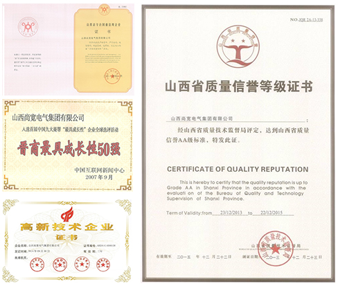
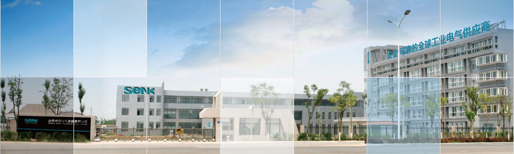

山西尚宽电气集团有限公司是一家多元化发展集资本运作、产业运营为一体的现代化科技集团企业，其主营高、低压成套开关设备、防爆变频器、电力系统自动化等工业电气产品从设计、生产、销售、设备租赁、电力工程施工到项目安装、运营、维护等全方位配套服务业务，并涉及房地产开发、酒店管理、商业零售、物流配送等领域，

集团公司成立以来，以优良的产品性能广泛应用于电力、钢铁冶金、石油化工、交通运输、国防工业、通讯、环保、建筑等行业，多次在引黄工程、太原钢铁集团公司、太 原市供电公司、山西汾西矿业集团、国家电网山西省电力公司、长治供电公司、西山煤电集团、晋城矿务局、山西博物馆、阳煤集团等国有及山西省重点工程配套使用我公司产品。
集团公司在跨越发展的同时，加快推进资本经营与产业经营的同步发展，互为促进。2012年8月8日，尚宽工业园正式启用，园区占地50余亩，建筑面积6万多平方米，公司员工大专以上学历占93%以上。公司拥有先进的技术设备和一流的制造技术，全面推行“6S”现代企业管理系统，使公司的生产和管理能力上升到一个新的高度，在同行业中占据领先地位，有效增加集团公司的综合实力和开拓国内外市场的能力。
面对中国经济的高速发展，尚宽电气集团将全面贯彻“尚报社会、宽闯天下”的企业精神，一如继往地坚持“诚信、沟通、创新、发展”的企业格言，把利益让给客户，抓住机遇，发展自我。不断完善和强化企业的品牌经营战略，将质量和服务作为企业长远发展的根本，在新的历史发展机遇中，尚宽将不断推进技术进步，实现产业科技化，立足国内外市场，成为社会尊重、用户信赖，积极承担社会责任的上市公司。
